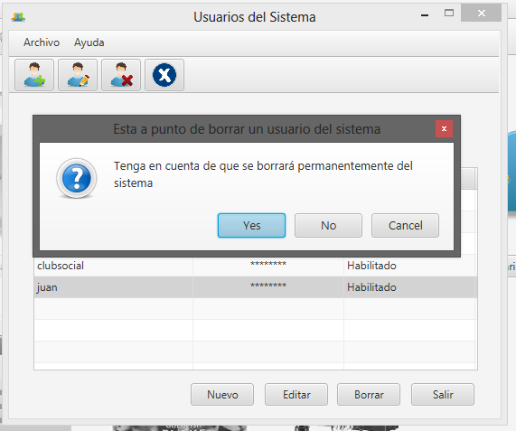

Para borrar un usuario, deberá seleccionar el usuario que desea eliminar de la lista de usuarios registrados y a continuación la penultima opción de la barra de herramientas en la pantalla principal de USUARIOS:

Se le solicitará confirmación de eliminación, deberá elegir "SI" para borrar el usuario seleccionado.
Una vez eliminado el usuario seleccionado, su nombre de usuario se encontrará disponible para crear un nuevo usuario posteriormente, tarea que se indica paso a paso aquí
Created with the Personal Edition of HelpNDoc: Easily create Help documents